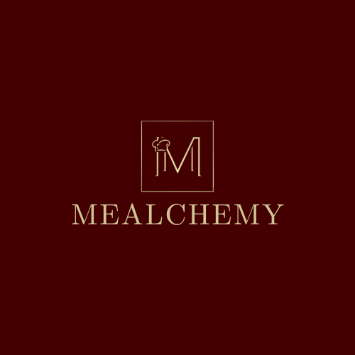
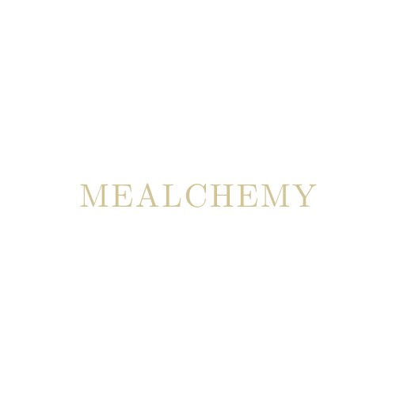

Primary full logo: original background
03 Logo & Iconography
The Mealchemy logo combines a square monogram mark with a serif wordmark. The preferred variant is gold on brand dark.

Primary full logo: original background
Full logo alternate: transparent
Monogram mark

Wordmark only
Maintain clear space equal to the height of the M lettermark on all four sides.
Scale proportionally only.
Burgundy, gold, cream, and dark surfaces only.
Never place the gold mark on low-contrast backgrounds.
Keep the wordmark at least 120px wide and the monogram at least 40x40px.
Use Material Symbols Outlined at 24dp standard size, 20dp in dense contexts.
Other icons, used to sufficiently aid context while maintaining simplicity.